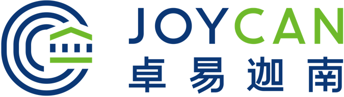

卓易迦南是致力于帮助中国学子在海外寻找实习与就业机会的跨境教育科技公司。
卓易迦南四个字，来自于英文Joy at Canaan。Joy是Job for You的缩写， Canaan指代the Promised Land，乃西方古典文化中上苍为迷失在旷野之外的子民所应许的美好之地。
卓易迦南结合线上与线下的培训与服务，通过与境外知名企业和机构的合作， 为学生提供境外实习与就业的一站式服务，服务对象既包括学生，也包括家长。
我们的特色在于:
· 由拥有海内外知名企业客户的资深跨境商业律师投资创立，熟知境外的政治、经济和文化背景，能熟练发挥法律在境外事务中的作用，在规则范围内为学生和家长提供一站式安全服务；
· 境内外联动，让学生在境外得到更多优质机会；
· 强大的教育资源。创始团队成员和高级顾问包括美国常青藤大学优秀校友、教育类上市公司教学总监和中美职业教育专家。
卓易迦南总部位于中国北京，在美国西雅图拥有全资控股子公司。
卓易迦南四个字，来自于英文Joy at Canaan。Joy是Job for You的缩写， Canaan指代the Promised Land，乃西方古典文化中上苍为迷失在旷野之外的子民所应许的美好之地。
卓易迦南结合线上与线下的培训与服务，通过与境外知名企业和机构的合作， 为学生提供境外实习与就业的一站式服务，服务对象既包括学生，也包括家长。
我们的特色在于:
· 由拥有海内外知名企业客户的资深跨境商业律师投资创立，熟知境外的政治、经济和文化背景，能熟练发挥法律在境外事务中的作用，在规则范围内为学生和家长提供一站式安全服务；
· 境内外联动，让学生在境外得到更多优质机会；
· 强大的教育资源。创始团队成员和高级顾问包括美国常青藤大学优秀校友、教育类上市公司教学总监和中美职业教育专家。
卓易迦南总部位于中国北京，在美国西雅图拥有全资控股子公司。
合作伙伴